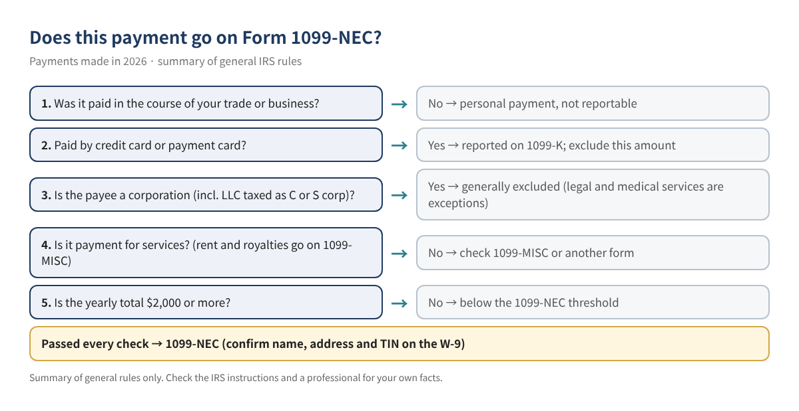
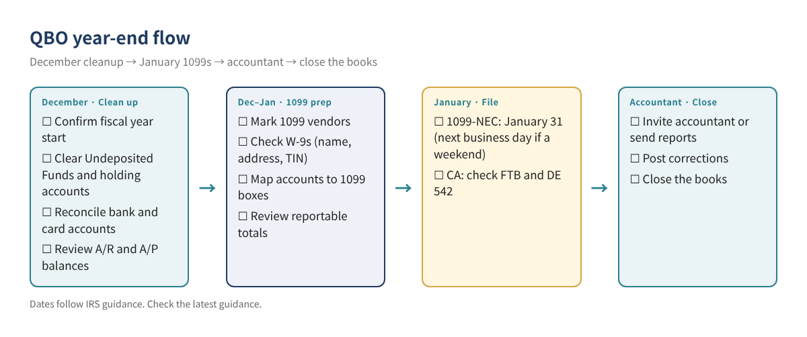
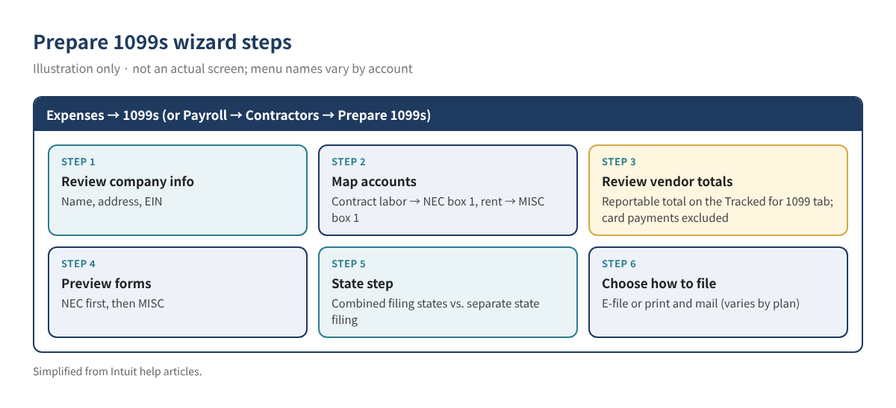
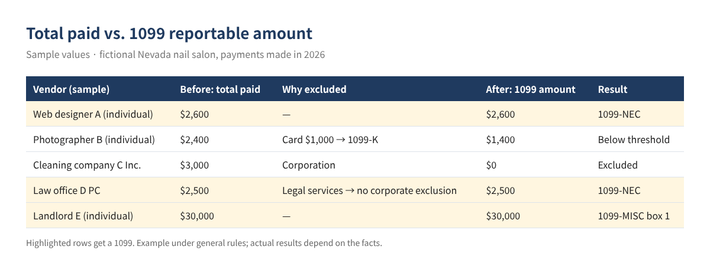

December brings a pile-up: cleaning up the books, preparing 1099s and gathering what your accountant needs. Because 1099s are due at the end of January, many owners spend early January chasing vendor addresses and taxpayer identification numbers (TINs). But 1099 amounts come straight from the payments recorded in QuickBooks Online (QBO), so the books have to be cleaned up first for the 1099s to be right.
This guide walks through the year-end order of work in QBO, how to pick 1099 vendors and check the amounts, and how state-level filings differ in Nevada, California and Texas, based on each agency's official guidance. It expands on the year-end section of the series starter, QuickBooks Online Basics for Beginners.
This article is general educational information, not tax, legal or financial advice.
Who this is for ☐ You paid individual contractors (designers, cleaners, repair technicians and so on) ☐ You usually rush 1099s at the end of January ☐ Your accountant asked for "year-end reports" and you are not sure what to send ☐ You do business in Nevada, California or Texas
According to the IRS, for payments made in 2026 the reporting threshold for Form 1099-NEC (nonemployee compensation) rose from $600 to $2,000. The 1099-MISC/NEC instructions note that the amount may be adjusted for inflation beginning in 2027. So the 2026 forms you file in early 2027 use the new threshold.
QBO's 1099 help also says only contractors paid above the annual $2,000 threshold get a 1099. Not every box moved to $2,000, though. As the table shows, royalties stay at $10 and gross proceeds paid to an attorney stay at $600.
| Type of payment (paid in 2026) | Form and box | Reporting threshold |
|---|---|---|
| Services by an individual contractor | 1099-NEC box 1 | $2,000 or more |
| Attorney fees for services | 1099-NEC | $2,000 or more |
| Rent (for example, to an individual landlord) | 1099-MISC box 1 | $2,000 or more |
| Royalties | 1099-MISC box 2 | $10 or more |
| Gross proceeds paid to an attorney | 1099-MISC box 10 | $600 or more |
A few exclusions from the IRS instructions are worth keeping in mind.

Intuit's QBO year-end guide covers checking the first month of the fiscal year, clearing undeposited funds, checking customer and vendor balances, reconciling accounts and closing the books. Add 1099 prep and the flow looks like this.

Go to Settings ⚙ → Account and settings → Advanced and check "First month of fiscal year" in the Accounting section. If it is wrong, every "this year" report covers the wrong period.
Payments that were never matched to a bank deposit can double-count income or throw off the bank balance. See How to Clean Up Undeposited Funds. If temporary accounts such as uncategorized or "to review" accounts still carry balances, move them to the right accounts. Bulk reclassifying transactions shows how to move many at once.
Intuit recommends reconciling all accounts by year-end to prepare for tax season, starting with the oldest statement or where you last left off. The menu is All apps → Accounting → Reconcile (on some screens, Settings ⚙ → Reconcile). If a difference remains, see Finding duplicate transactions and reconciliation differences.
Under Reports → Standard reports, open the A/R Aging Summary (money owed to you) and the Accounts payable aging summary (money you owe). Make sure nothing you already collected or paid is still sitting there. See Invoices, payments, refunds and credits and Bills and accounts payable.
Add contractors in All apps → Expenses & Bills → Contractors, and for vendors already on file, confirm that "Track payments for 1099" is checked in the vendor details (menu locations vary by account). Intuit recommends getting a W-9 from each contractor. QBO 1099 e-filing supports US addresses only, and an individual's SSN or a business's EIN must match to avoid errors.
Menu names vary by account. Start from Expenses → 1099s or Payroll → Contractors → Prepare 1099s. The wizard generally runs in this order.

Finally, share the books with your accountant (section 6) and lock the year once corrections are done (section 7).
| Item | Deadline or rule (IRS guidance) |
|---|---|
| 1099-NEC to recipients and to the IRS | January 31 (paper or electronic) |
| 1099-MISC to recipients | January 31 (February 15 if box 8 or 10 is used) |
| 1099-MISC to the IRS | February 28 on paper, March 31 electronically |
| Deadline on a weekend or legal holiday | Next business day |
| E-file requirement | 10 or more information returns in total must be e-filed |
| Free IRS filing system | IRIS Taxpayer Portal (requires an IRIS TCC; processing may take up to 45 days) |
Tip In 2027, January 31 and February 28 fall on a Sunday and February 15 is a federal holiday (Presidents' Day), so the next-business-day rule above may apply. Confirm the exact date with current IRS guidance. IRS Publication 1099 also says that beginning with the 2027 filing season, IRIS will be the only intake system and FIRE will no longer be available. If you plan to file directly through IRIS rather than through QBO, apply for a TCC early.
State-side obligations differ a lot. The table lists only what we confirmed on each agency's official pages, and cells we could not confirm are marked that way.
| Item | Nevada (NV) | California (CA) | Texas (TX) |
|---|---|---|---|
| Personal income tax (per official pages reviewed) | None (NV Department of Taxation) | Not covered on the FTB pages reviewed (see information return guidance below) | None (Texas.gov) |
| Filing 1099s with the state | Not confirmed on official pages — check with the state agency | May be required with the FTB if the recipient is a CA resident or the payment is CA-source. If you use the IRS Combined Federal/State Filing (CF/SF) program and amounts are identical, do not file separately | Not confirmed on official pages — check with the state agency |
| State filing method and dates | — | 9 or fewer may be filed on paper; 10 or more must be filed electronically via SWIFT. 1099-NEC state filing: paper 2/28, electronic 3/31 (FTB guide table) | — |
| Separate contractor reporting | Not confirmed on official pages | EDD DE 542: report contractors who are individuals or sole proprietors (including a single-member LLC treated as a sole proprietorship for federal tax) within 20 days of paying or contracting for $600 or more (penalty $24 per failure; $490 if intentional or false) | Not confirmed on official pages |
| Also worth checking at year-end | Commerce Tax applies to businesses with gross revenue over $4 million. Homepage notice: electronic submission of tax documents and payments required effective December 7, 2026 (check the notice for scope) | DE 542 guidance still shows a $600 trigger, separate from the federal threshold — confirm with EDD how it applies to 2026 payments | Taxable entities formed in or doing business in Texas, including corporations and LLCs, file and pay franchise tax |
California DE 542 note The EDD page says to file a DE 542 when you are required to file a federal 1099-NEC/MISC for the services and you pay or contract for $600 or more. How payments between $600 and $2,000 are treated after the federal change may be clarified by EDD, so if it applies to you, check EDD's current guidance or ask a professional. Also note that DE 542 is due within 20 days of paying or contracting, not in January.
One point applies in all three states: if your business collects sales tax, reconcile the sales tax returns with QBO before closing the year. See Sales tax setup and filing prep in QBO, and for employee W-2s, Recording payroll in QBO.
Here are the 2026 payments of a fictional business, "Sample Nail Studio LLC" in Nevada. All names and amounts are Sample values.
| Vendor (sample) | Entity type | How paid and amount (sample values) | 1099 result (general rules) |
|---|---|---|---|
| Web designer A | Individual | Check and bank transfer $2,600 | 1099-NEC ($2,000 or more) |
| Photographer B | Individual | Bank transfer $1,400 + credit card $1,000 | Card portion excluded → $1,400, below threshold |
| Cleaning company C Inc. | Corporation | Check $3,000 | Generally excluded (corporation) |
| Law office D PC | Professional corporation | Check $2,500 (legal services) | Legal services: 1099-NEC even for a corporation |
| Landlord E | Individual | Monthly rent, $30,000 for the year | 1099-MISC box 1 |
Photographer B was paid $2,400 in total, but the $1,000 paid by credit card is reported on Form 1099-K, so the 1099 amount is $1,400 and falls below the threshold. Law office D is a corporation, but the legal services exception makes it reportable. "Total paid" and "1099 reportable amount" can differ.

Inviting your accountant saves sending reports one by one. Go to Settings ⚙ → Manage users → the Accountants (or Accounting Firms) tab → Invite. Only a primary admin or company admin can invite users, and Intuit says accountant users don't count toward your subscription's user limit. See Users, permissions and security. If you need to send files instead, prepare these reports as of year-end.
| Report (Reports → Standard reports, search by name) | What to check |
|---|---|
| Profit and Loss | Full-year income and expense totals; unusually large accounts |
| Balance Sheet | December 31 bank, card and loan balances match statements |
| General Ledger / Transaction Detail by Account | Detailed transactions by account |
| A/R Aging Summary · Accounts payable aging summary | Money still owed to you and by you at year-end |
| 1099 Transaction Detail Report | 1099-reportable payments by vendor |
| Reconciliation reports (History by account) | Whether each account is reconciled through year-end |
Once your accountant's corrections are in, go to Settings ⚙ → Account and settings → Advanced → Accounting → Edit, turn on "Close the books" and enter a closing date. You can allow changes after a warning, or after a warning plus a password. Only admins can set this, and the "Exceptions to Closing Date" report shows changes made after you close. If a closed period needs a fix, talk with your accountant first about whether it would change numbers already filed. See Fixing mistakes: void, delete, undo.
Under IRS instructions, the 1099-NEC threshold for 2026 payments is $2,000. How to handle payments below it can depend on your situation, so check with your accountant. In California, check the DE 542 trigger separately.
The IRS instructions specifically exclude payments made by credit card or payment card and certain third party network transactions from 1099-NEC/MISC. Whether a particular app or transfer method falls into that group can depend on how the payment is processed, so check IRS guidance or a professional.
The IRS instructions generally exclude payments to an LLC taxed as a C or S corporation. The tax classification box on the W-9 shows how the LLC is taxed. Legal and medical services are exceptions.
Official pages say neither state has a personal income tax, but we did not find explicit guidance on state 1099 filing on the official pages we reviewed. If a recipient lives in another state, that state's rules may matter, so check with the state agency or a professional.
Admins can still edit after a warning or password, but numbers already filed may change. Talk with your accountant first and, where appropriate, consider an adjusting entry in the current year.
Related reading: for opening balance issues see Cleaning up Opening Balance Equity, and for prepaid costs see Prepaid expense amortization.
This article is general educational information, not tax, legal or financial advice. 1099 thresholds, deadlines and state filing rules can change every year and apply differently to each business. Confirm how they apply to your business with a licensed professional such as a CPA, EA or attorney. QBO screens, menu names and plan features change often, so check the current screens and the official guidance from Intuit, the IRS and each state agency.
QuickBooks is a registered trademark of Intuit Inc.; not affiliated with or endorsed by Intuit.